The gap
The product explained the work. It did not make owners feel seen.
Road-trip imagery felt far removed from the people Bridgeway was built for.
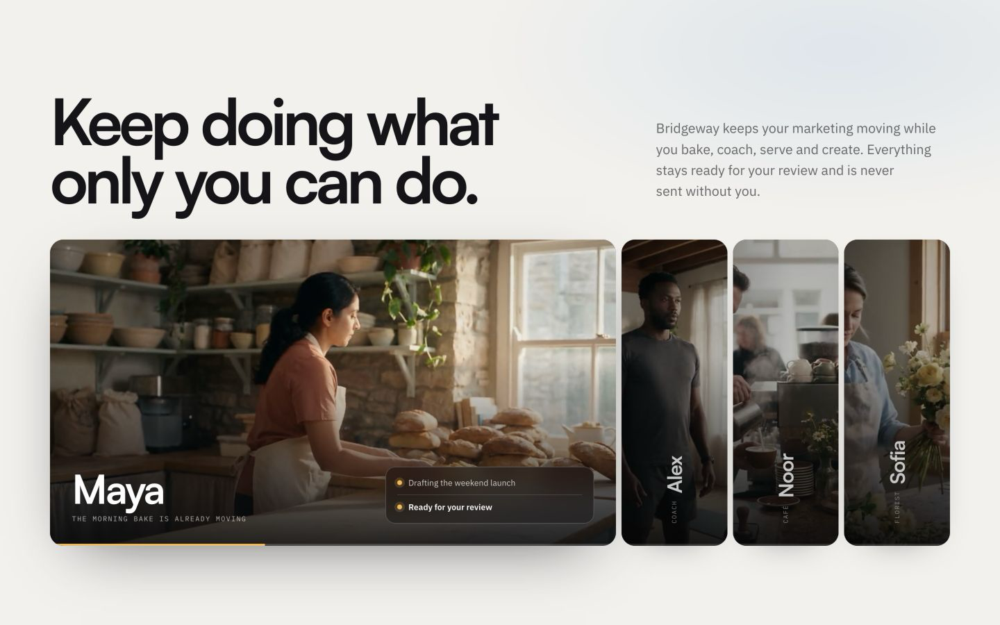
Bridgeway · Adobe product concept 2026
Before AI can market a business, it has to understand the person behind it.
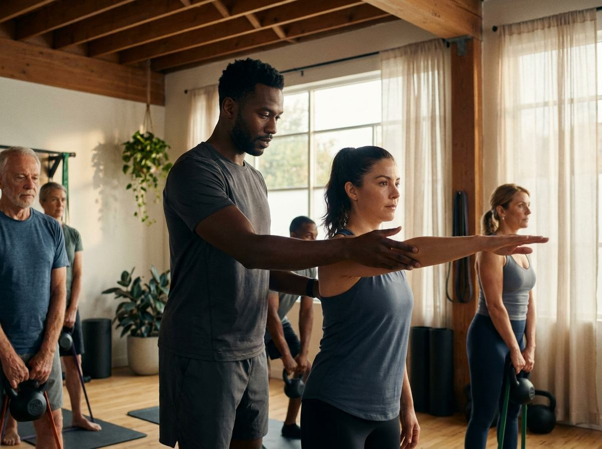
Overview
Project Bridgeway is Adobe's AI marketing agent for small businesses. Before it understands the business, it asks the owner to choose channels, configure tools, and translate their needs into marketing terminology. I redesigned onboarding as a translation layer: five questions in the owner's own words, then useful work prepared for their review.
Solution
Road-trip imagery felt far removed from the people Bridgeway was built for.

Maya bakes. Alex coaches. Noor serves. Sofia creates. Bridgeway carries the work that follows them home.
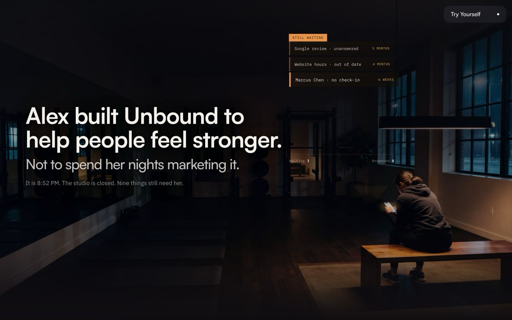
Five questions help Bridgeway understand what makes the business theirs.
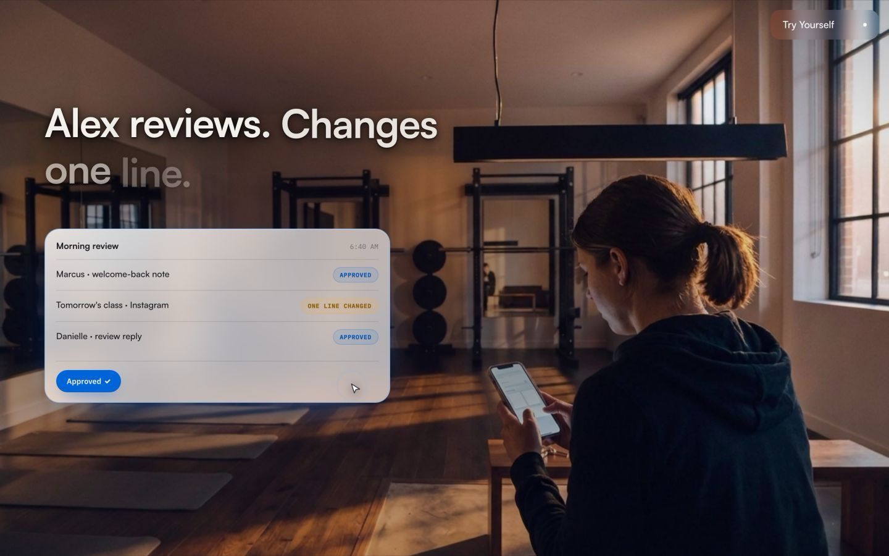
Outcomes
A 25-step setup becomes five questions. Bridgeway prepares the work. The owner decides what moves.
Act I. The second shift
Their work is different. The pressure after closing is the same.
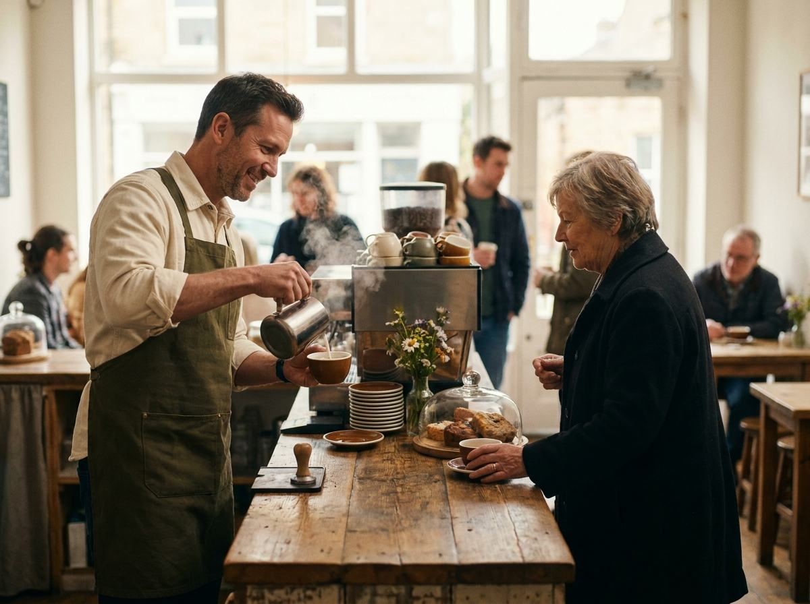
Alex, Maya, Noor and Sofia are composite personas synthesized from observed small-business patterns. They are not real individuals.
Coaching the class. Baking the bread. Serving the morning rush. Arranging every stem by hand.
Marketing becomes a second shift after the business closes.
The human spine
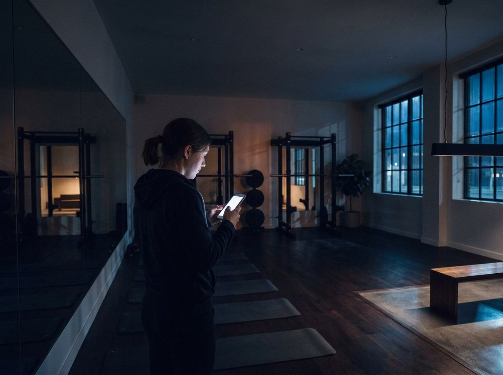
8:52PM
Coaching takes the whole day. After the last class: customer questions, unanswered reviews, schedule changes, lapsed members, an unposted video.
Alex does not need another tool to manage. Alex needs the work prepared for review.
Composite scenario based on the product audit and small-business workflow research.
Live user interview · on site
I met a small-business owner where the work actually happens. The conversation revealed how marketing gets squeezed between customers, operations, and everything that cannot wait.
What I heard wasn't a request for more marketing tools. It was a request for marketing that could understand the business before asking for more work.
Observed
The business day and the marketing day compete for the same limited attention.
Informed
The redesign begins with recognition, then asks only for context the system cannot find.
Still testing
How little context Bridgeway needs before its first useful draft.
Act II. The system collision
Before Bridgeway understands the business, it asks the owner to choose channels, configure tools, and translate their needs into marketing terminology.
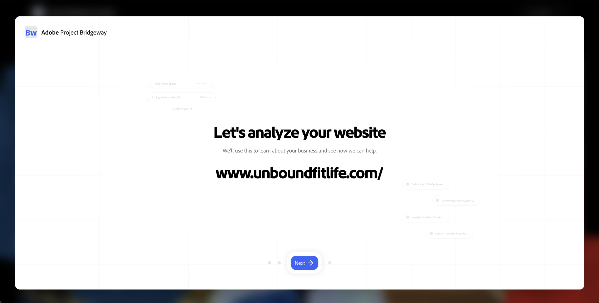
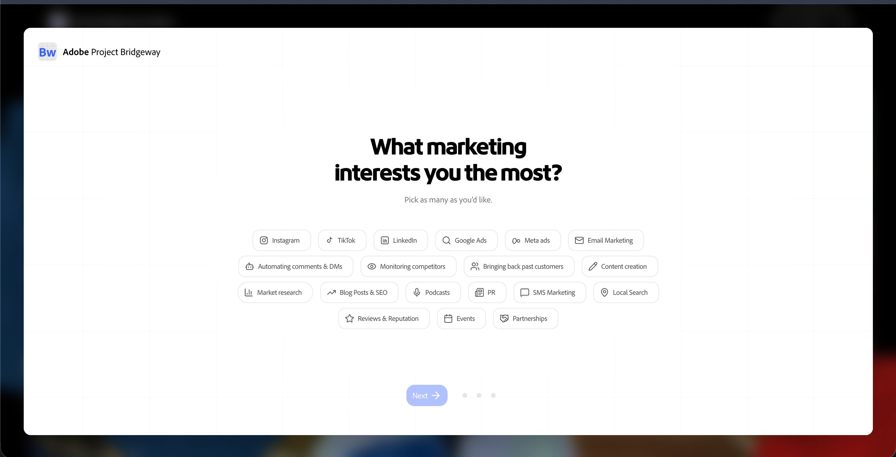
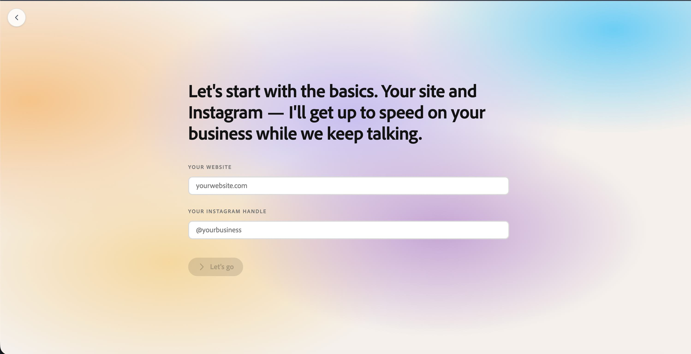
Heuristic evaluation of the current onboarding flow, to identify where the product asks owners to think like marketers.
Stage 01. The friction
0+
Desktop-only workflows, extensive configuration, and tedious manual setups that block immediate value creation for busy small business owners.
Friction 01
Requires manual prompt copying to external AI toolsThe product hands the work of translation back to the owner.
Friction 02
Desktop-first layout isolates mobile business usersOwners run their businesses away from a desk. The flow assumes they are sitting at one.
Two languages
Which channel do you want to configure?
Who needs me today?
What is your campaign objective?
What should people remember?
Which task should an agent run?
What will happen without me?
What audience should we target?
Will this still sound like us?
The friction is not only in the interface. It is in the product's mental model.
Small-business owners already understand what makes their business meaningful. The product's job is to translate that understanding into useful work.
The translation model
01
Words, website, Instagram, reviews, schedule, and customer history.
02
Bridgeway identifies the values, audience truths, and language that make the business distinct.
03
It translates that understanding into a focused strategy.
04
It prepares relevant drafts in the places where the business already operates.
05
Nothing is published or sent until the owner reviews it.
Stage 02. The strategy
An intentional shift toward simplicity, focusing strictly on high-impact insights.
01
Onboarding happens on the go. Small business owners manage their physical spaces, clients, and assets away from their desks. Mobile-first design guarantees onboarding is accessible instantly, anywhere.
02
Cut the noise. Minimize the steps down to a single narrative flow: establish business name, select tone alignment, identify customer takeaway thoughts, link core channels, and provide direct validation.
Principles of intentional UI
Language
Meet owners in their languageTranslate professional marketing actions into native human objectives. Jargon is cognitive overhead.
Sequence
Reflect before recommendingShow owners what you understand about them before prompting for more decisions. Ground the relationship.
Attention
Work quietly and ask deliberatelyAutomate downstream structural choices. Reserve human attention for curation and intent.
Value
Start with owner words and recognizable situationsDeliver instantly tangible assets. Let value precede setup configuration.
Control
Show what Bridgeway understood before it recommends workAI is the engine, but the business owner always holds the steering wheel. Build absolute confidence.
Stage 03. The shift
Five questions in the owner's own words. Every screen below is from the prototype.
Bridgeway confirms the name customers already know.
Choose the truth that feels closest to why the business exists.
Three controls turn instinct into a clear marketing direction.
Name the emotional outcome in ordinary words.
Choose the thought you want customers to carry away.
Connect the places that already hold the business's voice.
The story is shaped. The direction is ready. The owner stays in control.
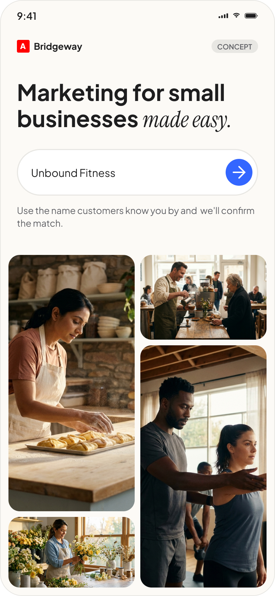
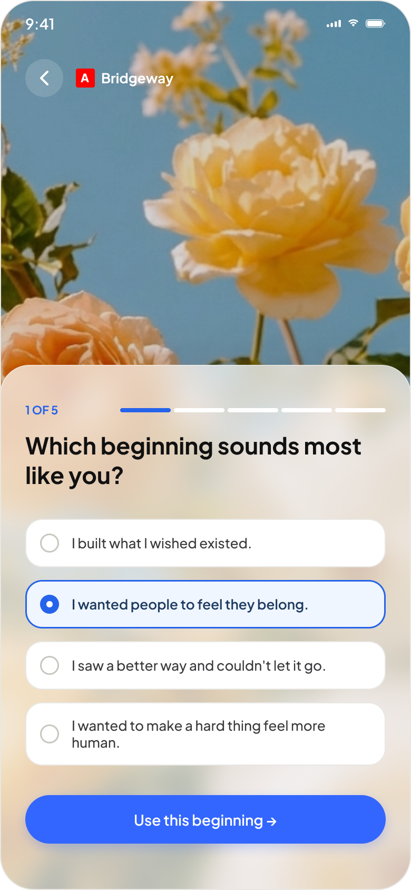
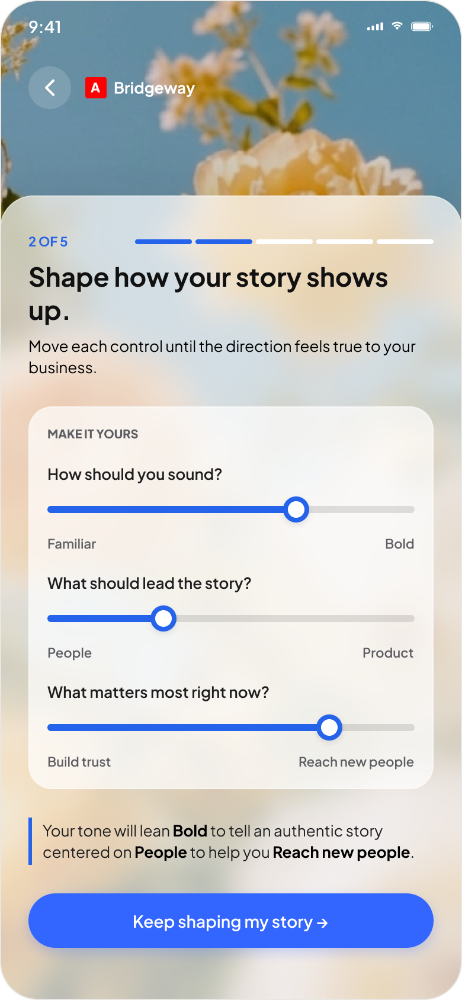
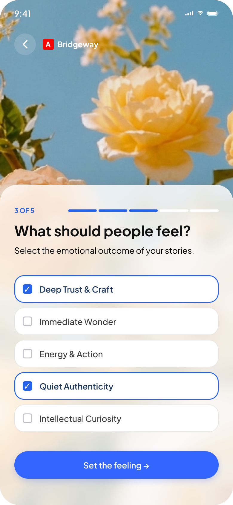
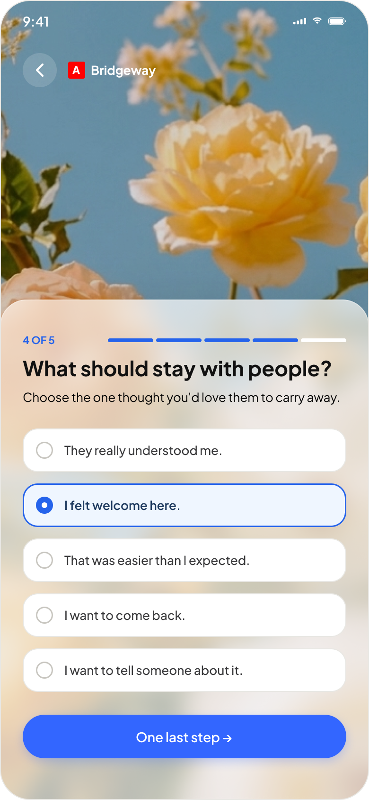
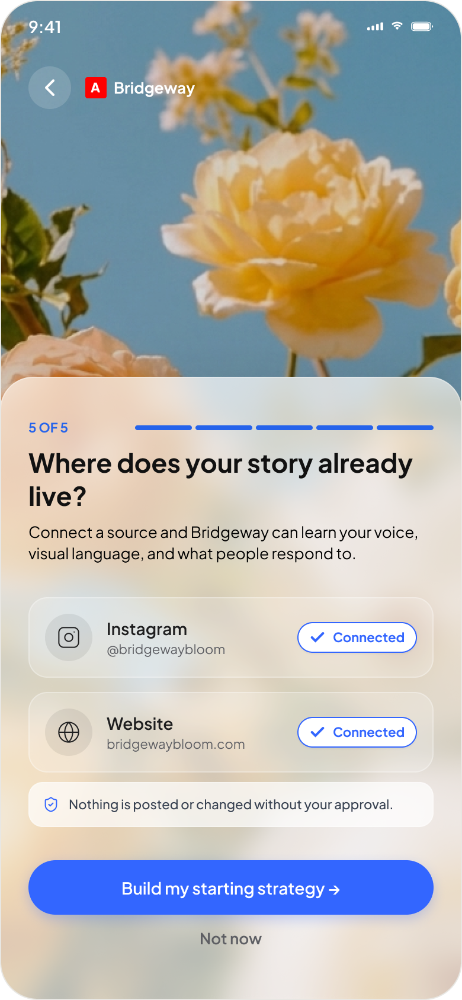
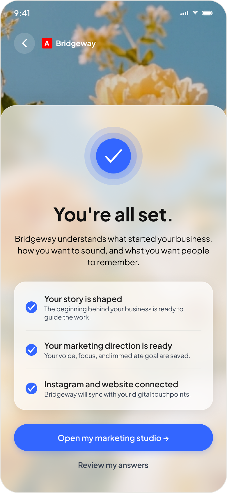
Reflection and alignment
"Unbound is not simply selling workouts. It helps people believe they can become stronger than they think. The business is built around personal attention, steady progress, and the feeling that everyone belongs on the floor."
Draft reflection based on your answers and connected business sources.
Useful work
Instead of giving you empty text input fields or tracking configurations, Bridgeway immediately displays finished work based on your answers.
Why we drafted this
Draft only. Nothing has been published. Every draft carries its reasoning, so approval is a judgment call and not a leap of faith.
Receipt 01
Based on confirmed event detailsThe community PR day is on Alex's calendar. Bridgeway drafted around the confirmed date and format.
Receipt 02
Matches Unbound's community-led voiceUses language that reflects how Alex talks about the gym: coaching, belonging, showing up together.
Receipt 03
Uses approved onboarding languageThe tone and vocabulary come from what Alex confirmed during onboarding. Nothing was invented.
Act IV. The return
While the room was empty, Bridgeway worked the pile: a member six weeks gone, a review five months unanswered, a message unread for three weeks. Drafted, never sent.
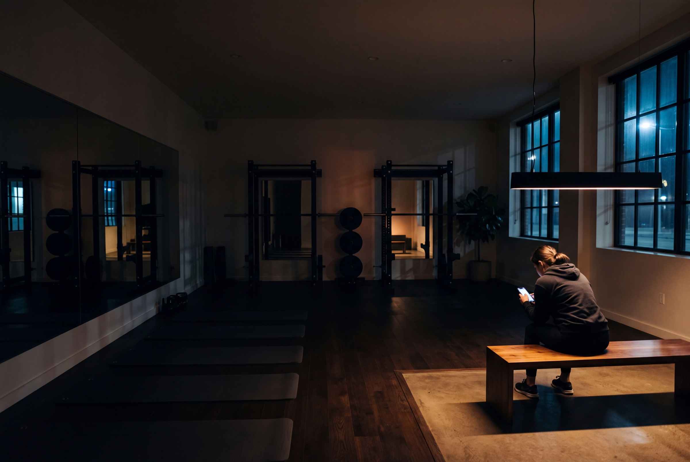
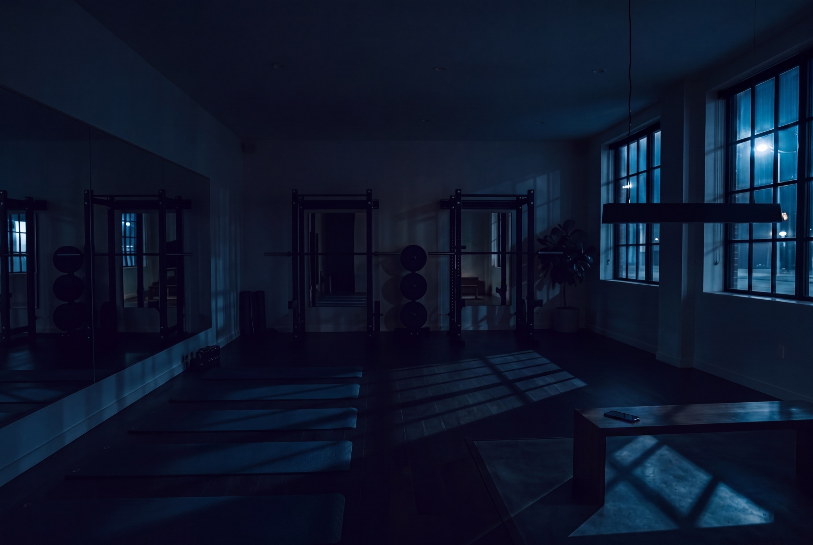
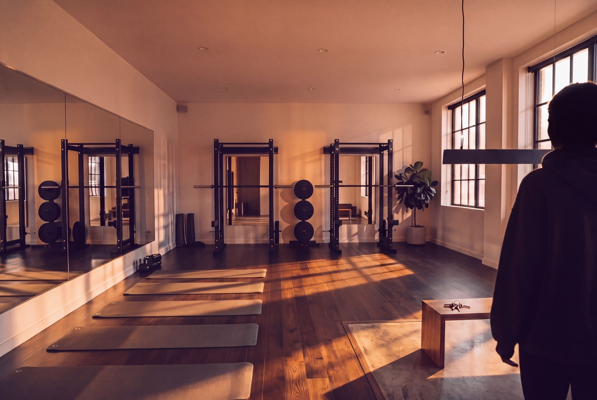
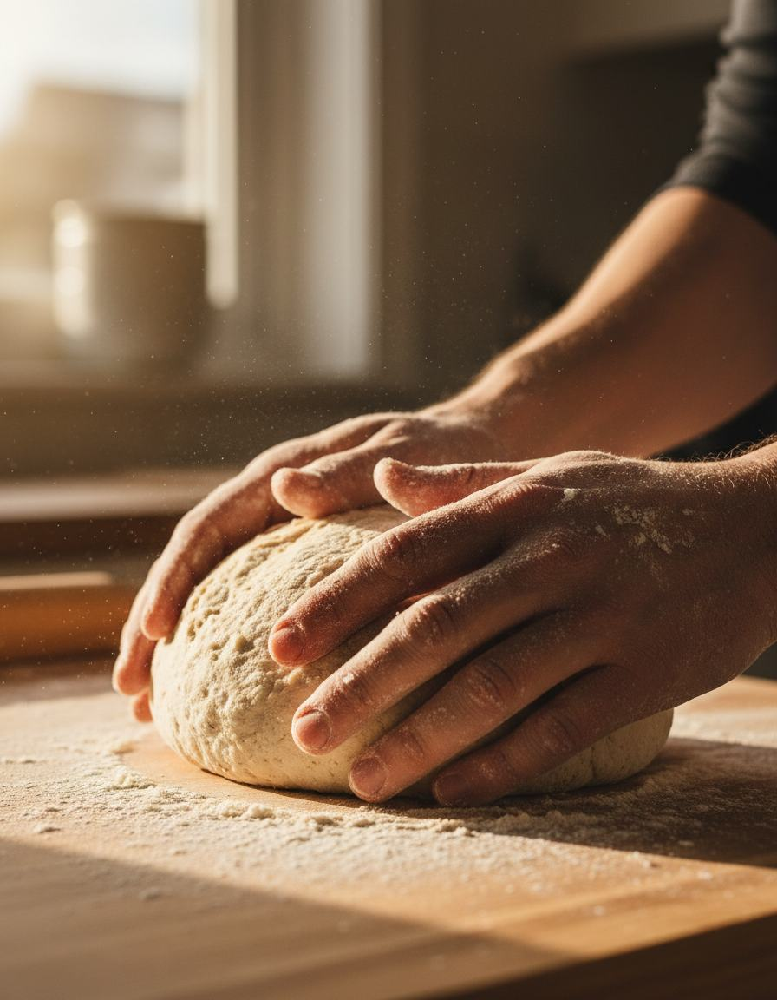
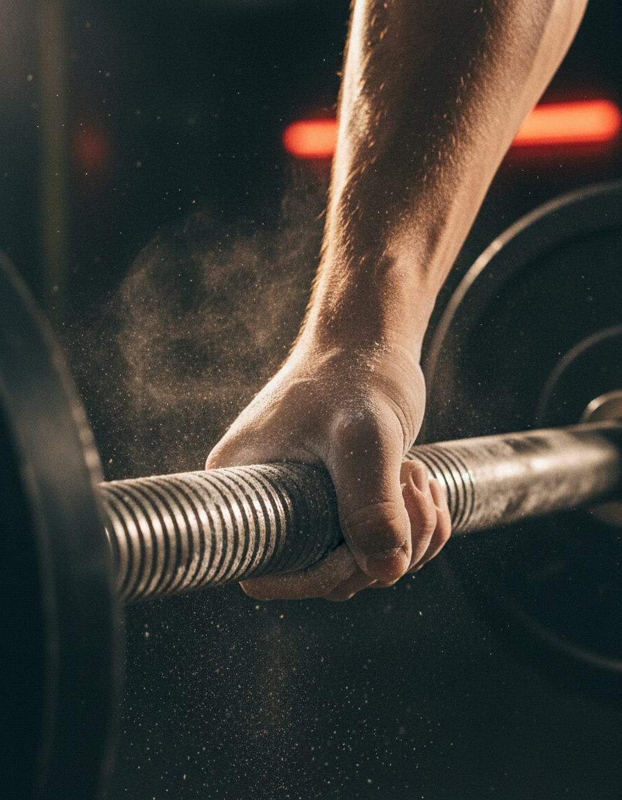
Bridgeway has prepared the unfinished marketing work for their review.
Appendix. Research foundation
0%
Of small business owners handle marketing alone, citing a steep learning curve and time constraints. SBA survey
0 hours
Average weekly time spent wrangling marketing tools instead of focusing on core operational crafts. Industry report
0M
Small businesses operate across the United States. Behind many of them is an owner doing the marketing after the real work is finished. U.S. SBA, Small Business Profile
Methodology
01 Audit
Existing product auditHeuristic evaluation of the current onboarding flow to identify where the product asks owners to think like marketers.
02 Redesign
First-principles redesignReframing onboarding as a translation layer that converts owner language into marketing work.
03 Scenarios
Composite scenariosAlex, Maya, Noor, and Sofia are composite personas synthesized from observed small-business patterns. They are not real individuals.
04 Field interview
On-site contextual interviewA recorded conversation inside the business grounded the problem framing in a real owner's working environment. It informed the direction; it did not validate the proposed solution.
Evidence discipline
Observed
Onboarding begins with marketing interests and configuration before establishing business context.
Inferred
Owners must translate their business needs into the product's marketing language.
Hypothesis
Beginning with owner language will improve trust and reduce time to first useful work.
Not validated
The quality of the reflection, the minimum context required, and whether the model works consistently across business types.
What I would validate next
Recognition
Can owners recognize themselves in the opening choices without additional explanation?
Trust
Does the reflection feel accurate enough for owners to connect business sources?
Control
Can owners clearly explain what Bridgeway will prepare and what it will never send without approval?
Measures
Time to first useful draft. Percentage of drafts approved, edited, held, or rejected. Owner comprehension of automation boundaries. Confidence before and after the reflection. Performance across different business categories.
Appendix. AI stack
Thinking and synthesis
Claude, ChatGPT
Design and prototyping
Figma, Codex
Motion exploration
Higgsfield, Google Flow